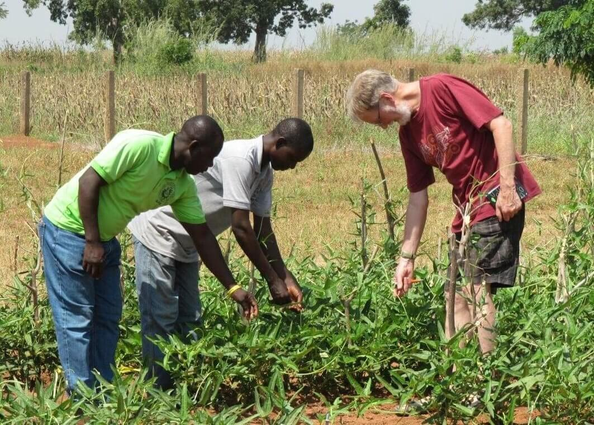

Proceso de Fabricación
En nuestras plantaciones ubicadas en nuestras actuales sedes nigerianas producimos nuestro producto de la más alta calidad. También nuestro proceso es 100% natural ya que no usamos conservantes en nuestras cosechas de maíz. En cuanto a las especias para nuestros múltiples sabores también son naturales y su proceso de elaboración se encarga de que queden uniformemente esparcidas aprovechando nuestro único pero simple método de producción en el mercado. Nuestro método de producción se basa en la creación de nuestros nachos de forma totalmente manual mientras se derriten y endurecen. Mientras este proceso se da nuestros trabajadores con la protección adecuada se encargan de moldearlos dando su peculiar forma de triángulo, nacho.
